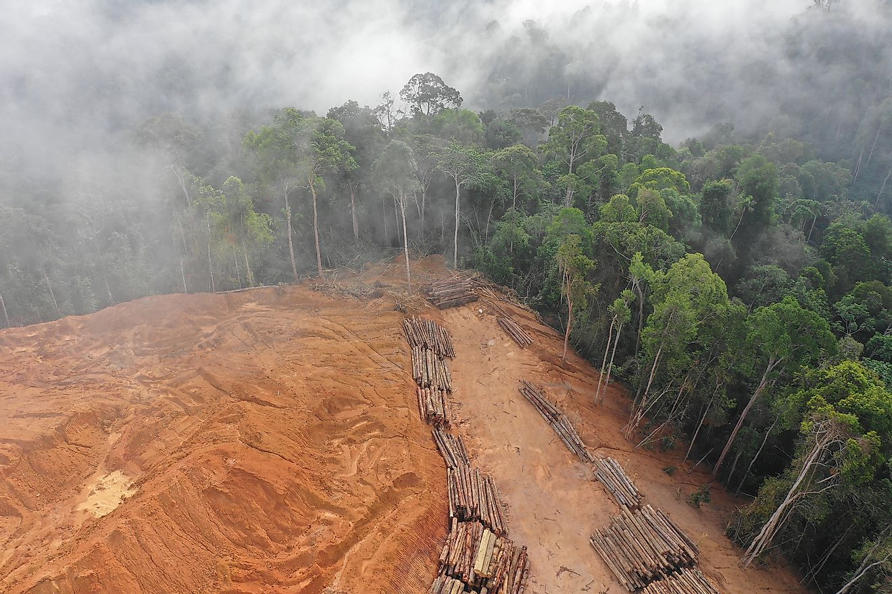

What Is Deforestation?
Deforestation is the clearing, destroying, or otherwise removal of trees through deliberate,
natural, or accidental means. It can occur in any area densely populated by trees and other plant life, but the majority of it is currently happening in the Amazon rainforest.
The loss of trees and other vegetation can cause climate change, desertification, soil erosion, fewer crops, flooding, increased greenhouse gases in the atmosphere, and a host of problems for indigenous people.
Deforestation occurs for a number of reasons, including farming, with 80% of deforestation resulting from extensive cattle ranching, and logging for materials and development. It has been happening for thousands of years, arguably since man began converting from hunter/gatherer to agricultural based societies, and required larger, unobstructed tracks of land to accommodate cattle, crops, and housing. It was only after the onset of the modern era that it became an epidemic.

The forest is not a resource for us, it is life itself. It is the only place for us to live.
The Causes of Deforestation: Why Is Deforestation Happening?
Multiple factors, either of human or natural origin, cause deforestation. Natural factors include natural forest fires or parasite-caused diseases which can result in deforestation. Nevertheless, human activities are among the main causes of global deforestation.
According to the Food and Agriculture Organization (FAO), the expansion of agriculture caused nearly 80% of global deforestation, with the construction of infrastructures such as roads or dams, together with mining activities and urbanization, making up the remaining causes of deforestation.
1. Agriculture is the Number 1 Cause of Deforestation (~80%)
Why is deforestation happening? According to the FAO, agriculture causes around 80% of deforestation. And how does agriculture cause so much deforestation? According to the same report, 33% of agriculture-caused deforestation is a consequence of subsistence agriculture – such as local peasant agriculture in developing countries.
Commercial or industrial agriculture (field crops and livestock) cause around 40% of forest loss – in the search for space to grow food, fibers or biofuel (such as soybeans, palm oil, beef, rice, maize, cotton and sugar cane). It is also particularly interesting to note livestock is believed to be responsible for about 14% of global deforestation. The main reasons why have to do with the large areas require both to raise livestock but also to grow its (soy-based) food.
2. Deforestation Caused By New Constructions (~15%)
The construction of human infrastructures has also been driving deforestation. More specifically, 10% of deforestation can be attributed to new infrastructures that serve the current human lifestyle in four main ways: transportation, transformation and energy generation.
On one hand, roads, rails, ports or airports have been built to move all sorts of goods – from cereals and fruits to spices, minerals or fossil fuels – either directly to trade centers or to transformation sites. So while at first there were only fruit trees, roads soon arrived to allow transporting fruit to other regions. And while some goods were and are collected manually, others such as coal, oil, natural gas, biomass, but also meat, dairy or spirits, required the construction of large extraction, transportation and/or transformation infrastructures.
3. How Urbanization Is Causing Deforestation (~5%)
The populational shift that is leading people to move from rural areas to urban areas is also contributing to deforestation (5%, according to FAO). This urban growth – in which 68% of the world’s population is expected to live in cities by 2050 – is leading to an exponential growth of housing and consumption sites. And as cities become larger so they can host more people, they challenge the natural boundaries surrounding them, often leading to deforestation. This is one of the reasons why deforestation is happening.
Environmental Effects of Deforestation From Above
Loss of Habitat
One of the most dangerous and unsettling effects of deforestation is the loss of animal and plant species due to their loss of habitat. 70% of land animals and plant species live in forests. Not only does deforestation threaten species known to us, but also those unknown.
The trees of the rainforest that provide shelter for some species also provide the canopy that regulates the temperature. Deforestation results in a more drastic temperature variation from day to night, much like a desert, which could prove fatal for many inhabitants.
Increased Greenhouse Gases
In addition to the loss of habitat, the lack of trees also allows a greater amount of greenhouse gases to be released into the atmosphere. Healthy forests absorb carbon dioxide from the atmosphere, acting as valuable carbon sinks. Deforested areas lose that ability and release more carbon.
Water in the Atmosphere
The trees also help control the level of water in the atmosphere by helping to regulate the water cycle. In deforested areas, there is less water in the air to be returned to the soil. This then causes dryer soil and the inability to grow crops.
Environmental Effects of Deforestation From Below
Soil Erosion and Flooding
Further effects of deforestation include soil erosion and coastal flooding. Trees help the land to retain water and topsoil, which provides the rich nutrients to sustain additional forest life.
Without forests, the soil erodes and washes away, causing farmers to move on and perpetuate the cycle. The barren land which is left behind in the wake of these unsustainable agricultural practices is then more susceptible to flooding, specifically in coastal regions.
Effects of Deforestation on Indigenous People
Destruction of Homelands
As large amounts of forests are cleared away, allowing exposed earth to whither and die and the habitats of innumerable species to be destroyed, the indigenous communities who live there and depend on the forest to sustain their way of life are also under threat.
The loss of forests has an immediate and direct effect on their lifestyle that we in the highly industrialized parts of the world, despite our own dependency on what the rainforest provides, will never know. The level of immediacy is exponentially greater for indigenous peoples.
The governments of nations with rainforests in their borders often attempt to evict indigenous tribes before the actual clear-cutting begins. This is one of the pre-emptive effects of deforestation.